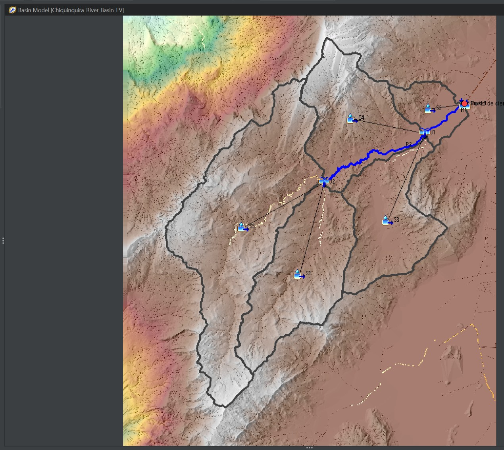
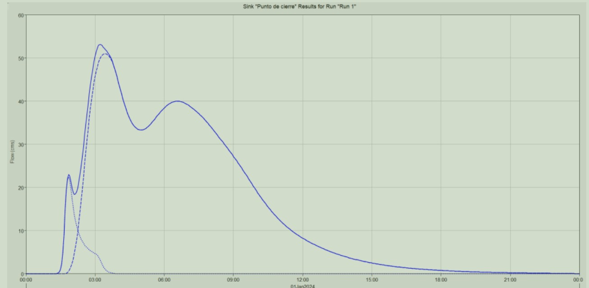

HEC-HMS · Hydrological modelling
Semi-distributed rainfall–runoff modelling
A semi-distributed basin model developed to transform rainfall into design hydrographs and support hydraulic simulations.
Role
Watershed discretization, process configuration and hydrograph analysis
Watershed discretization, process configuration and hydrograph analysis
Methods
Subbasins, junctions, reaches, losses, transformation and routing
Subbasins, junctions, reaches, losses, transformation and routing
Tools
HEC-HMS, GIS and hydroclimatic data processing
HEC-HMS, GIS and hydroclimatic data processing
Technical scope
The watershed was represented through connected subbasins, routing reaches and a defined closure point. The workflow linked terrain and drainage analysis with hydrological-process configuration and generated hydrographs suitable for downstream hydraulic boundary conditions.


Professional note
Project-specific names, client information and identifying map panels were omitted or cropped. The images are presented solely as evidence of technical capability; they do not constitute official deliverables or authorization to reuse project data.